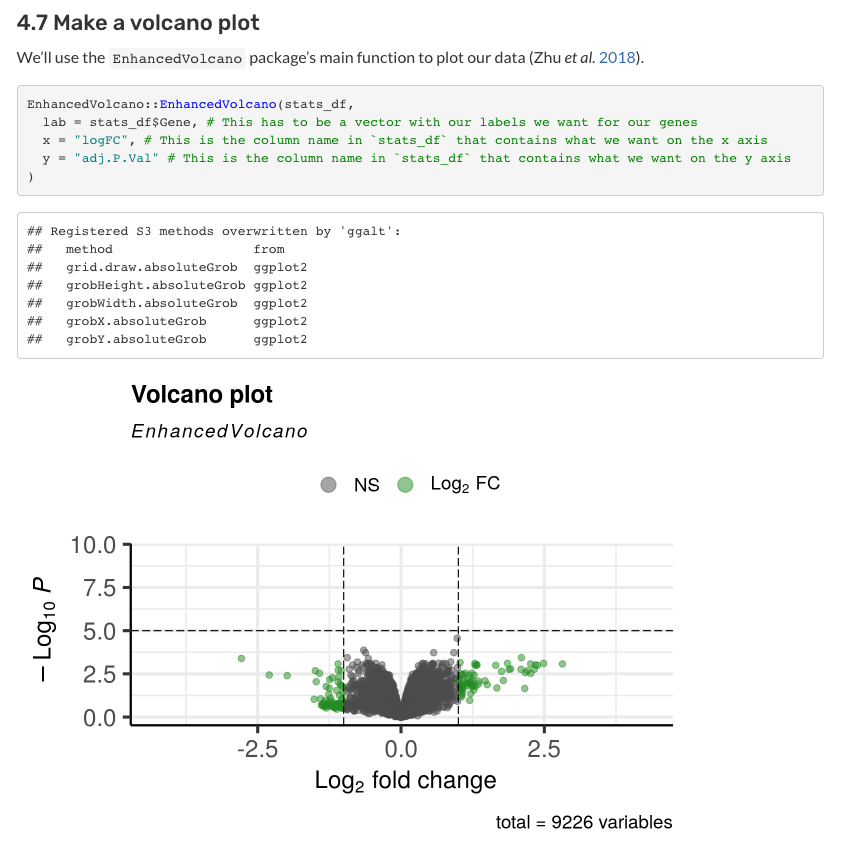

Explore a variety of example analyses like clustering, differential expression, pathway analysis, etc., for refine.bio datasets.
How to use these examples
These examples are available as R notebooks (.Rmd) and can be modified for your refine.bio dataset.
Set up
The examples are written in R and use a variety of libraries. Get started by installing the required tools and libraries.
Download and follow along an example analyses
You can use the refine.bio dataset that we use in analysis or you can use a different refine.bio dataset, relevant to your research interests.